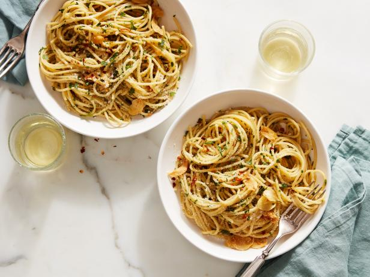

Ingredients
- 1/2 cup extra virgin olive oil
- 10 garlic cloves , sliced
- 1 tbsp red chilli flakes
- 1/4 cup chopped parsley
- Handful of dried pasta
Directions
- Boil water in a pot and season the water with salt and cook the pasta for 8 minutes or instructed by the packaging.
- Heat oil over medium high heat. Add garlic and cook until golden - be careful not to burn it
- Toss with pasta and cooking water per Base Directions. Toss through parsley and chilli flakes, serve with parmesan